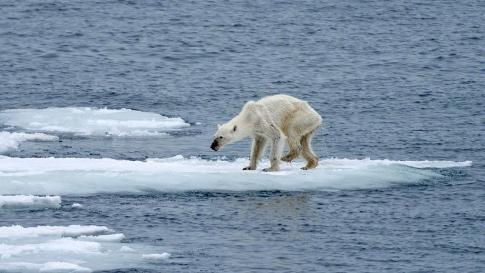
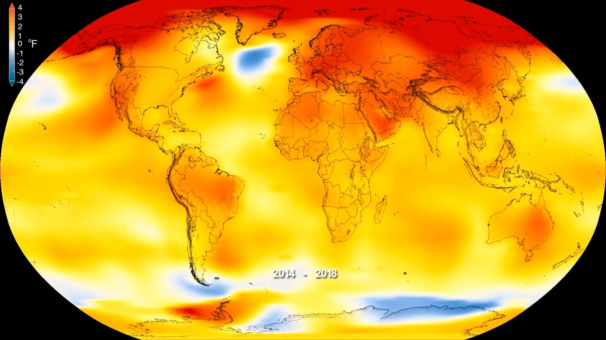
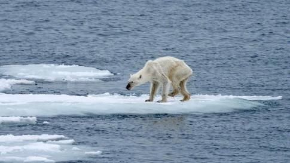
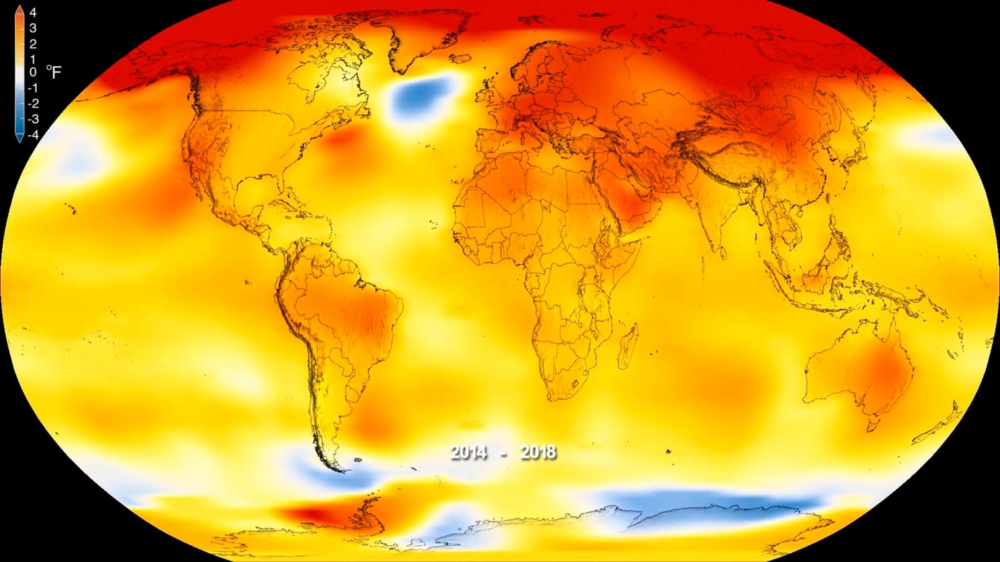
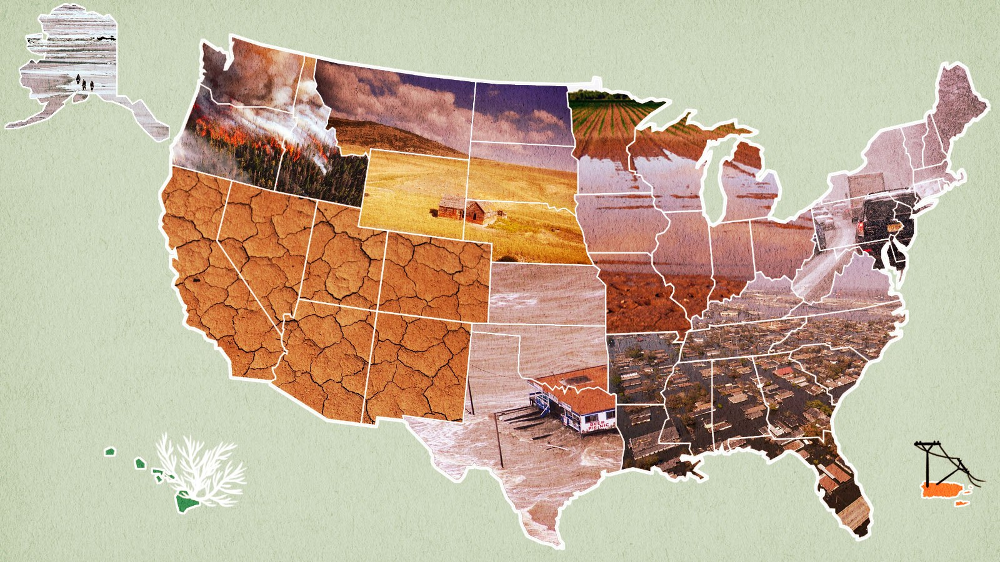

What is it?
- Changes in average weather conditions that last over multiple decades or longer.
- "Greenhouse Effect" → warming that results from the atmosphere trapping heat radiating from Earth towards space.
Why is it bad?
Scientists are highly confident that global temperatures will continue to rise for future decades, mainly due to greenhouse gases being produced by human activities. Some effects are:
- Temperatures will continue to rise
- Frost-free season (and growing season) will lengthen
- Changes in precipitation patterns
- More droughts and heat waves
- Hurricanes will become stronger and more intense
- Sea level will rise 1-4 feet by 2100
- The Arctic will likely become ice-free
- U.S. Regional Effects

 



Evidence
Global climate change has already had observable impacts across every area of the country and many sectors of the economy that are expected to grow in the coming decades.
- Global temperature rise
- Warming oceans
- Shrinking ice sheets
- Glacial retreat
- Decreased snow cover
- Sea level rise
- Declining Arctic sea ice
- Extreme events
- Ocean acidification
What needs to be done?
Even if we got rid of greenhouse gases entirely today, we would still feel the impact of climate change for decades to come. We can, however, avoid or limit the worst effects of it. There is a crucial two-step approach: adaptation and mitigation. Adaptation is learning to live with the climate change that has already been set in motion, and mitigation is reducing the number of greenhouse gases that flow into the atmosphere. Recycling, greener transportation, using energy wisely and frugally, better diets, voting, writing letters to government officials, signing petitions, etc. will all help but it will be far from enough. The solution will require a globally coordinated response and local efforts for cities and regions.
Why do I feel strongly about this? (and why you should too!)
Multiple scientists have given us 12-30 years to live if nothing is done about climate change and, quite frankly, I would much rather prefer to die from old age.One girl has already died from air pollution. The alarming rate of how fast climate change is progressing is terrifying to me, and it should be to everyone else, as well. I wanted to be able to spread some awareness, no matter how small, because this is a very real problem that needs to be fixed immediately.